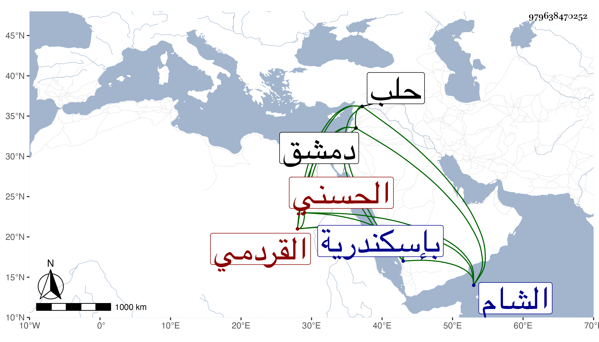

0902Sakhawi.DawLamic.ITO20230111-ara1.EIS1600.979638470252
Biography ID: 979638470252
700
قجقار القردمي قردمر الحسني . تنقل بعد أستاذه إلى أن انضم للمؤيد شيخ حين كان نائب الشام فلما استقر في السلطنة قدمه ثم عمله أمير سلاح ثم ولاه نيابة حلب في سنة عشرين ثم غضب عليه ونفاه لدمشق معزولا ثم أعيد إلى التقدمة وجعله في جملة الأوصياء على ولده فأمسكه ططر قبل دفن المؤيد وحبسه بإسكندرية ثم قتل بها في سنة أربع وعشرين عن ستين فأزيد ، وكان كريما محترما عنده أدب مع انهماك في لذاته واشتهار بالفروسية . ذكره ابن خطيب الناصرية وشيخنا في إنبائه مطولا وآخرون .
